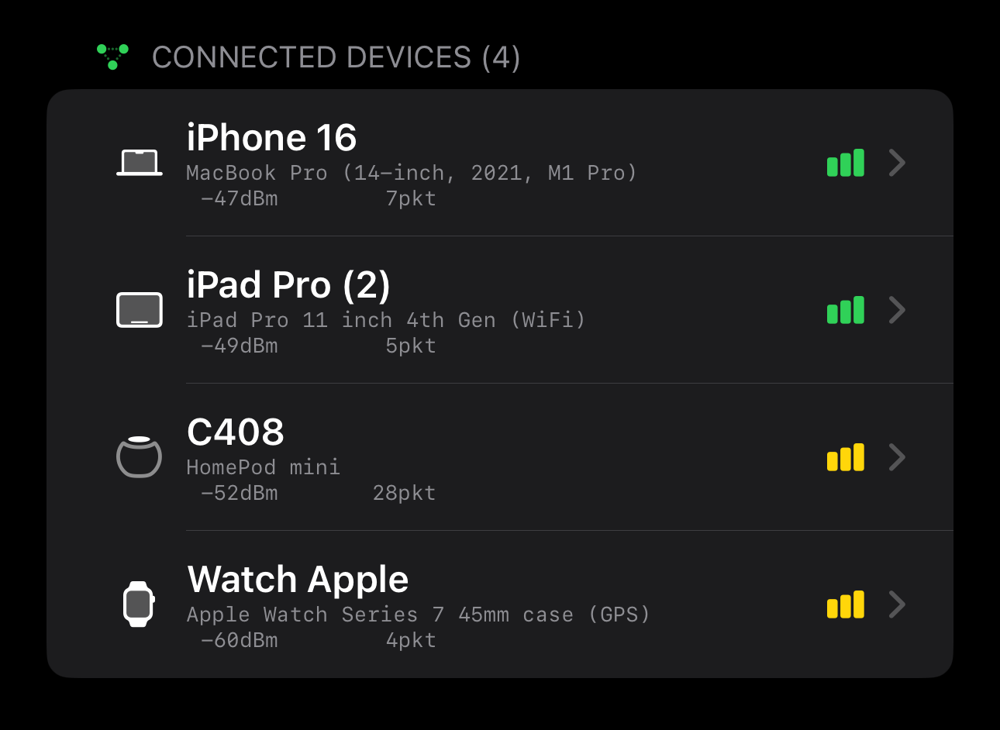
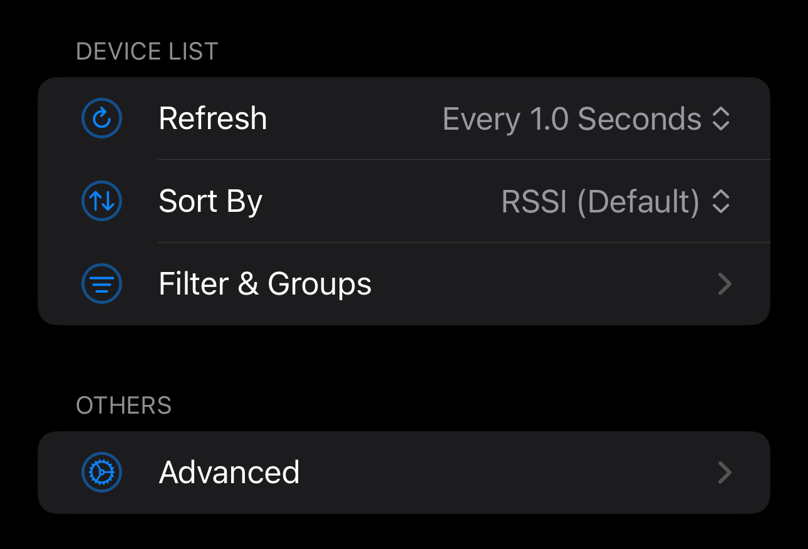
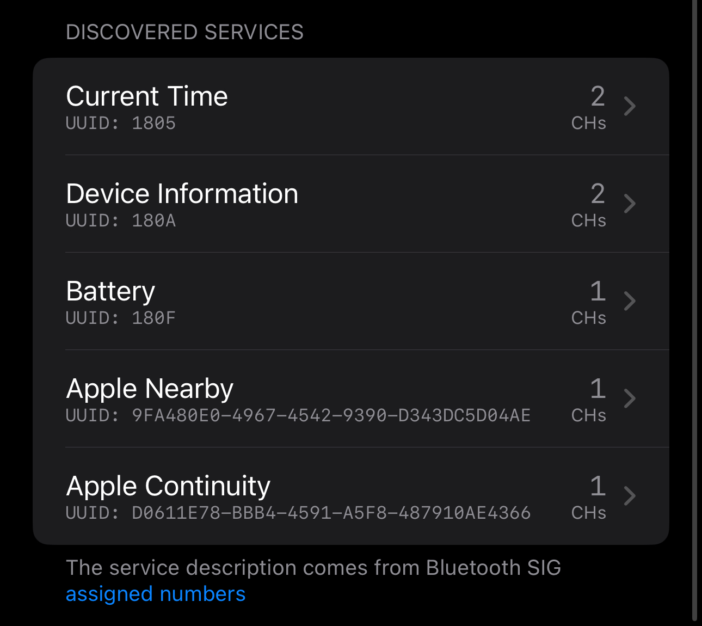
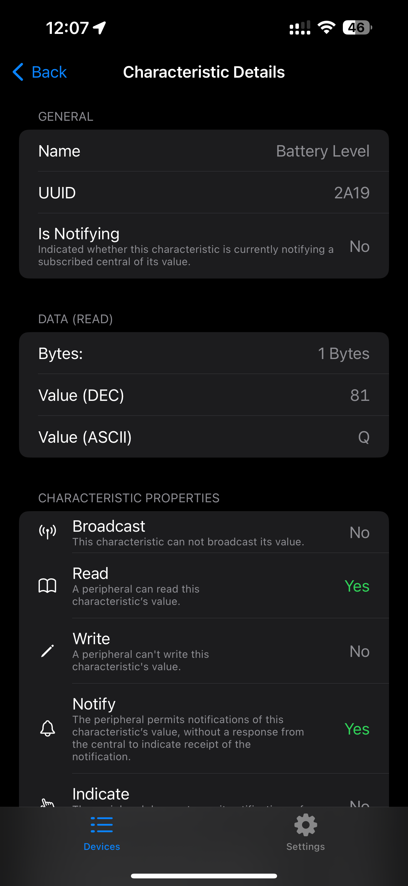

Bluetooth Low Energy Toolkit
Explore BLE
with precision.
Discover, connect, and inspect Bluetooth Low Energy devices with an interface designed for clarity and depth.
View on GitHub
Bluetooth Low Energy Toolkit
Discover, connect, and inspect Bluetooth Low Energy devices with an interface designed for clarity and depth.
View on GitHub

Scan
Real-time scanning surfaces all nearby BLE peripherals with signal strength, advertisement data, and identifiers — organized, not overwhelming.

Inspect
Drill into GATT profiles, read and write characteristics, subscribe to notifications. All data presented in a clean, readable layout.

For Everyone
Whether you're debugging firmware or learning about BLE for the first time, the interface stays out of your way and lets you focus.
Open Source
BLE Sense is open source. Browse the code, report issues, or contribute on GitHub.
View Repository